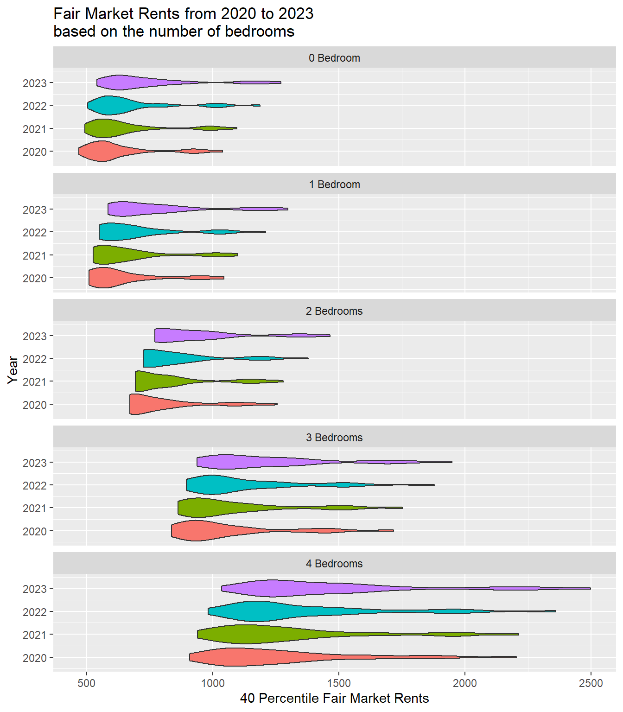

How Have Covid Change Rent Prices In North Carolina?
Report
Introduction and Data:
For this research project, we will be investing: How has the cost of rent changed post-COVID in North Carolina? The COVID-19 pandemic delivered a huge blow to the economy, as a result, there has been a steady increase in inflation despite pay rates remaining roughly the same (Bernstein and Tedeschi). This has greatly increased the cost of living with rent prices skyrocketing in multiple states (Bernstein and Tedeschi). As college students, we want to analyze the extend of COVID-19’s impact of rent prices in North Carolina, our home state. We will compare the rent prices of the one-bedroom, two-bedroom, three-bedroom, and four-bedroom for 2019 (pre-COVID) and 2022 (post-COVID). We hypothesized that rent prices from 2019 increased by 20% post-COVID.
We will use data collected by the Department of Housing and Urban Development’s Office of Public Development and Research (HUD’s PD&R). Data collection started in 1983 based on surveys of local housing markets. Now, housing authorities conduct surveys on their behalf, along with accepting telephone or mail surveys. Their full collection of data is divided by year, then state, and then county. There is also the option to view the full state or just the county. The variables included are zip code, efficiency, one-bedroom, two-bedroom, three-bedroom, four-bedroom, and Fair Market Rent (FMR) percentile. FMR is the amount an individual is likely to pay for rent in a particular area based on the term length listed by the landlord (HUD). The variable efficiency is defined as “the ratio of the rent estimate for Efficiency Units to the rent estimate [certain bedroom units]” (HUD). It is based on “the average of the past three estimates from the most recent American Community Survey 5-Year releases” (HUD). The variables, years, efficiency, one-bedroom, two-bedroom, three-bedroom, four-bedroom, and FMR percentile are quantitative variables. The variable state is a categorical variable.
Ethical concerns may involve the tenants in the property being disturbed by survey collectors or numerous telephone calls requesting for surveys. Another issue with privacy could be that tenants may not want everyone to know the rent prices of the area they live in. There is also an ethical concern regarding the areas and individuals being surveyed and how those results could alter rent prices alongside inflation.
Methodology:
(The methodology section should include visualizations and summary statistics relevant to your research question. You should also justify the choice of statistical method(s) used to answer your research question. Prediction, Interference, both?)
To test our hypothesis, we will use a linear regression model that looks how prices have changed in North Carolina as a result of COVID.
(Try to add additional variables!)
Did rent increase in your county after COVID-19?
North Carolina counties where fair market rent increased from 2020 to 2023 1

Which counties in North Carolina had the largest rent increases after COVID-19?
North Carolina counties with fair market rent increasing by 25% or more from 2020 to 2023
| County Name | Change in Fair Market Price (%) |
|---|---|
| Transylvania County | 41.52622 |
| Granville County | 31.38713 |
| New Hanover County | 31.31379 |
| Pitt County | 29.45726 |
| Pender County | 28.69983 |
| Gates County | 28.43547 |
| Polk County | 28.25967 |
| Pamlico County | 27.26291 |
| Davie County | 26.74854 |
| Forsyth County | 26.74854 |
| Stokes County | 26.74854 |
| Yadkin County | 26.74854 |
| Tyrrell County | 26.04116 |
Which counties in North Carolina had the largest rent increases after COVID-19?
North Carolina counties with fair market rent decreasing from 2020 to 2023
| County Name | Change in Fair Market Price (%) |
|---|---|
| Camden County | -12.898954 |
| Hyde County | -3.931737 |

rent_averages <- rents |>
group_by(year, bedrooms) |>
summarize(mean = mean(fmr)) |>
mutate(year = year - 2020)`summarise()` has grouped output by 'year'. You can override using the
`.groups` argument.rent_averages |>
kable()| year | bedrooms | mean |
|---|---|---|
| 0 | 0 | 633.14 |
| 0 | 1 | 651.65 |
| 0 | 2 | 799.12 |
| 0 | 3 | 1062.55 |
| 0 | 4 | 1282.35 |
| 1 | 0 | 657.30 |
| 1 | 1 | 674.45 |
| 1 | 2 | 825.05 |
| 1 | 3 | 1089.86 |
| 1 | 4 | 1312.96 |
| 2 | 0 | 684.60 |
| 2 | 1 | 708.88 |
| 2 | 2 | 864.77 |
| 2 | 3 | 1134.80 |
| 2 | 4 | 1368.58 |
| 3 | 0 | 751.61 |
| 3 | 1 | 781.94 |
| 3 | 2 | 946.68 |
| 3 | 3 | 1233.93 |
| 3 | 4 | 1486.67 |
regression <- linear_reg() |>
set_engine("lm") |>
fit(mean ~ year + bedrooms, data = rent_averages)
regression |>
tidy() |>
kable()| term | estimate | std.error | statistic | p.value |
|---|---|---|---|---|
| (Intercept) | 606.1204 | 13.879189 | 43.67117 | 0.0000000 |
| year | 50.3614 | 4.760523 | 10.57896 | 0.0000000 |
| bedrooms1 | 22.5675 | 16.830989 | 1.34083 | 0.2013267 |
| bedrooms2 | 177.2425 | 16.830989 | 10.53072 | 0.0000000 |
| bedrooms3 | 448.6225 | 16.830989 | 26.65455 | 0.0000000 |
| bedrooms4 | 680.9775 | 16.830989 | 40.45974 | 0.0000000 |
glance(regression)$r.squared[1] 0.9945113Results:
(Showcase how you arrived at answers to your research question using the techniques we have learned in class. Provide only the main results from your analysis)
Sources:
https://www.huduser.gov/portal/datasets/fmr/fmrs/FY2023_code/2023bdrm_rent.odn?year=2023&cbsasub=METRO33860M33860&br_size=0
https://www.cbpp.org/research/poverty-and-inequality/tracking-the-covid-19-economys-effects-on-food-housing-and
https://www.huduser.gov/portal/datasets/fmr.html
https://www.whitehouse.gov/cea/written-materials/2021/04/12/pandemic-prices-assessing-inflation-in-the-months-and-years-ahead/
Footnotes
Source: HUD Fair Market Rent Data. Change in fair market rent is calculated by finding the average percent change of fair market rents from 2020 to 2023 of 0 to 4 bedroom accommodations.↩︎